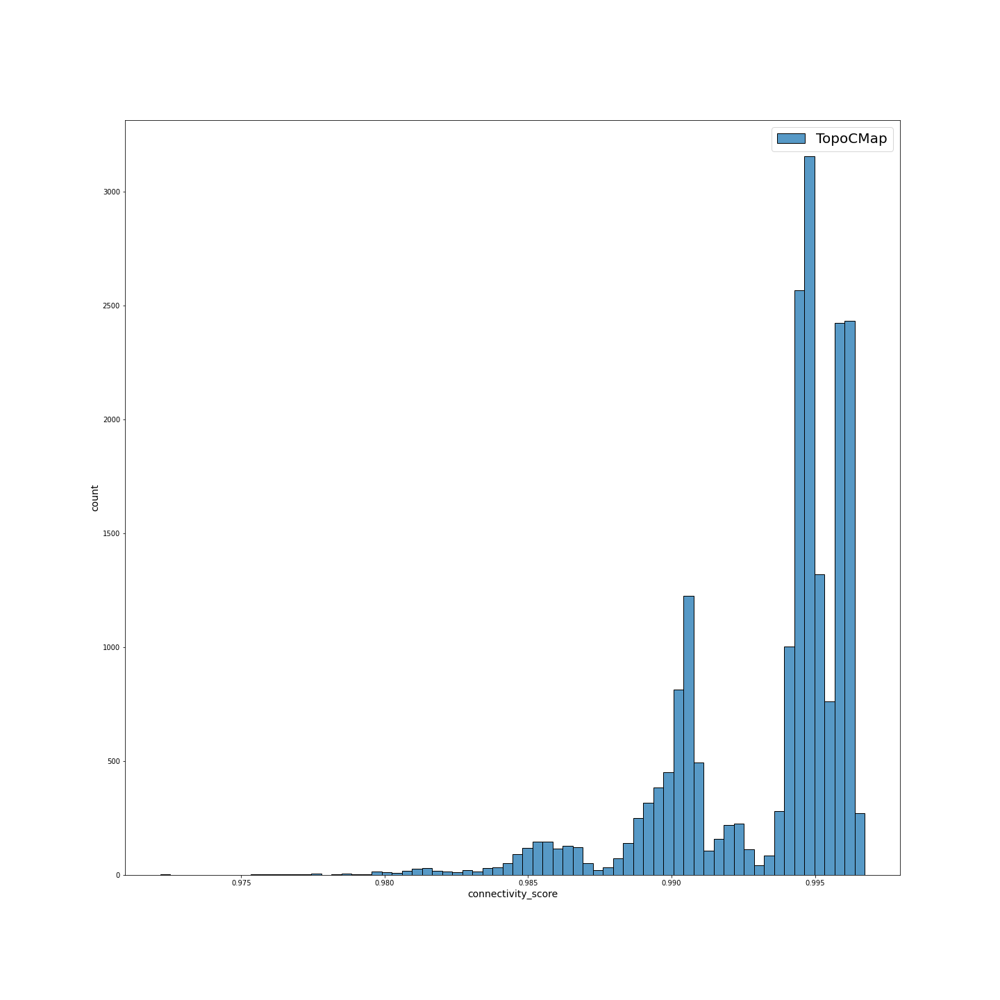
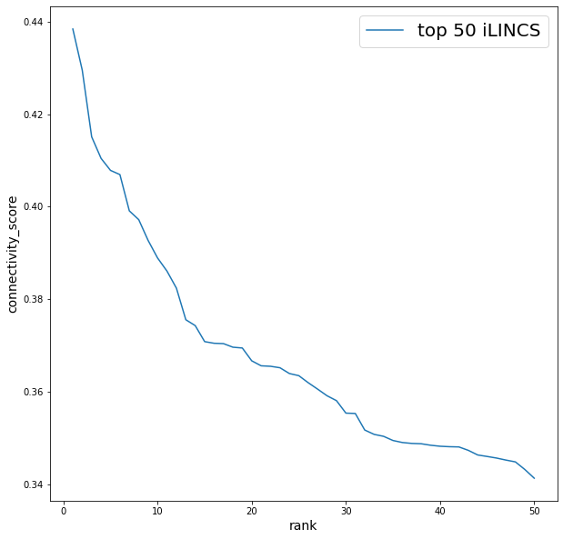

Connectivity Map - это ресурс, который использует клеточные ответы на возмущения для поиска взаимосвязей между болезнями, генами и терапией. База данных CMap содержит экспрессионные сигнатуры, возмущенные различными малыми молекулами или реагентами, вызывающие сверхэкспрессию или нокдаун генов, на разных клеточных линиях. Изменения в экспрессии генов (в совокупности называемые дифференциальной сигнатурой экспрессии), возникающие в результате заболевания или лечения, можно сравнить на предмет сходства со всеми возмущенными сигнатурами в базе данных. Возмущения, которые вызывают очень похожие сигнатуры, называются "связанными"; их сходные транскрипционные эффекты предполагают, что они оказывают связанные физиологические эффекты на клетку. Эти связи могут быть использованы для разработки различных методов лечения заболеваний.
Например, имея экспрессионную сигнатуру для какого-то заболевания, мы можем ее сравнить с сигнатурами, индуцированными малыми молекулами, из базы данных. Затем проранжируем сигнатуры по их сходству с сигнатурой запроса(в нашем случае, сигнатурой заболевания). Те малые молекулы, которые вызывают наиболее схожие изменения в экспрессии, можно назвать "положительно связанными". А малые молекулы, которые изменяют экспрессию противоположным образом, называются "отрицательно связанными". Именно они могут расматриваться в качестве кандидатов лекарственных препаратов для этого заболевания.
Концепция Connectivity Map Lamb et al.(2006)
Центр транскриптомики LINCS в Broad Institute, используя технологию L1000, расширил ресурс CMap, чтобы охватить более 1 млн профилей Lamb et al. (2006).
В рамках проекта NIH LINCS Центр транскриптомики Broad Institute LINCS создал более 1,3 миллиона транскриптомных профилей с использованием технологии L1000. Большая часть этих данных L1000 включает в себя лекарственные возмущения клеточных линий человека.
При разработке подхода было предположено, что можно было бы с небольшими затратами "поймать" любое клеточное состояние с помощью измерений сокращенного числа транскриптов. Были проанализированы 12031 профиль экспрессии Affymetrix HGU133A в Gene Expression Omnibus (GEO). Они же были использованы для определения оптимального количества информативных транскриптов, которые были названы ‘landmark’ транскрипты. Этот анализ показал, что 1000 landmarks было достаточно, чтобы восстановить $82\%$ информации транскриптома.
Для измерения 1000 landmark транскриптов был адаптирован метод, включающий амплификацию, опосредованную лигированием (LMA), с последующим захватом продуктов амплификации на микросферы с флуоресцентной адресацией (Peck et al., 2006). Метод был расширен до 1000 параллельных реакций.

Концепция L1000 assay Subramanian et al. (2018)
Integrative LINCS (iLINCS) - это интегративная веб-платформа для анализа данных и сигнатур LINCS. Портал предоставляет удобный интерфейс для анализа omics (транскриптомных и протеомных) наборов данных LINCS.
Внутренняя база данных iLINCS содержит более 10 000 обработанных наборов omics данных, более 220 000 omics сигнатур и более $10^9$ статистически значимых “связей” между сигнатурами. Наборы данных Omics включают транскриптомные (RNA-seq и микрочипы) и протеомные (Reverse Phase Protein Arrays и LINCS targeted mass spectrometry proteomics) датасеты. Коллекции наборов данных включают транскриптомные и протеомные данные, сгенерированные проектом Cancer Genome Atlas (TCGA), наборы данных GEO GDS и полную коллекцию наборов данных GEO RNA-seq.
Библиотеки сигнатур iLINCS:Библиотеки сигнатур LINCS L1000:
Библиотеки LINCS L1000 содержат химически и генетически возмущенные сигнатуры LINCS, полученные технологией LINCS L1000.
Также стоит упомянуть следующие библиотеки сигнатур:
Все предварительно вычисленные сигнатуры возмущений в iLINCS состоят из двух векторов: вектора значений logFC d=(d1,..., dN) и вектора p-value p=(p1,...,pN), где N-количество генов или белков в сигнатуре. Помимо такого представления, сигнатуры пользователя также могут состоять только из значений logFC без p-value, 2 списков генов: с повышенной и пониженной экспрессией, и только одного списка генов Pilarczyk et al. (2019).
В зависимости от типа сигнатуры запроса используются различные метрики связности. Если сигнатура запроса создается из набора данных iLINCS или загружается пользователем с значениями logFC и p-value, то связность со всеми сигнатурами iLINCS вычисляется как взвешенная корреляция между двумя векторами значений logFC и вектором весов, равным . Когда загруженная пользователем сигнатура состоит только из значений logFC без p-value, вектор весов корреляции основан только на p-value сигнатур iLINCS Pilarczyk et al. (2019).
Связь между сигнатурой запроса и возмущением устанавливается с помощью анализа обогащения оценок связности между сигнатурой запроса и набором всех сигнатур L1000 (для всех клеточных линий, временных точек и концентраций). Анализ устанавливает, являются ли оценки связности как набора достаточно высокими на основе метода Random Set Pilarczyk et al. (2019).
L1000 fireworks display (L1000FWD) - это веб-приложение, которое обеспечивает интерактивную визуализацию экспрессионных сигнатур из набора данных LINCS L1000. Большая часть данных L1000 получена возмущением клеточных линий человека с помощью лекарственных препаратов. Эти профили экспрессии генов могут быть использованы для генерации сотен тысяч лекарственных экспрсессионных сигнатур. Такой набор сигнатур является ценным каталогом для поиска связей между лекарствами, генами и болезнями; и для открытия механизмов действия (МОА) для менее изученных лекарств и малых молекул. Также это предоставляет возможность перепрофилирования лекарств Wang et al. (2018).
Подготовка сигнатур начинается с нормализации данных 3 уровня LINCS L1000. Затем вычисляют сигнатуры, используя метод характерного направления. Для построения матрицы смежности сигнатур было использовано 34 502 сигнатур. Эта матрица смежности содержит попарное косинусное сходство между сигнатурами в пространстве 978 landmark генов. Часть ребер с низким уровнем сходства была удалена. Таким образом был получен взвешенный неориентированный граф, состоящий из 18 082 узлов (сигнатур) и 595 177 ребер. Связанные компоненты с менее чем 10 узлами были удалены из графа, в результате чего граф состоял из 16 848 узлов и 594 372 ребер. Окончательный граф сигнатур охватывает 68 различных клеточных линий, 3237 препаратов/соединений, 3 временных точки и 132 дозы.
Как было упомянуто ранее, в L1000FWD каждый узел представляет собой экспрессионную сигнатуру, индуцированную препаратом. Интерфейс L1000FWD позволяет менять форму и цвет узлов в соответствии со связанными с ними атрибутами, такими как клеточная линия, MOA, временная точка и batch. Сигнатуры кластеризованны по сходству. Многие кластеры содержат сигнатуры различных типов клеток, разделяя при этом общие МОА. Кроме того, карта L1000FWD позволяет пользователям проецировать свои собственные сигнатуры на карту для определения того, где находится сигнатура в глобальном пространстве экспрессий. Поиск на основе сходства позволяет находить сигнатуры, имитирующие или обращающие сигнатуру запроса, представленную 2 списками генов: генов с повышенной и пониженной экспрессией Wang et al. (2018).
Оценка сходства считается как пересечение списков генов с повышенной и пониженной экспрессией сигнатуры запроса с аналогичными списками генов для сигнатуры из базы данных, деленное на "эффективный ввод". "Эффективный ввод" расчитывается как число общих генов для входных списков и генов из L1000. Для оценки статистической значимости пересечения списков генов сигнатуры запроса со списками сигнатуры базы данных используется точный тест Фишера. Для расчета z-score моделируются 10 000 пар случайных списков генов с повышенной и пониженной экспрессией в качестве входных данных. Для каждой сигнатуры запроса вычисяется уровень сходства с сигнатурой из базы данных. Затем уже для значения сходсва исходной сигнатуры запроса с сигнатурой из базы данных вычисляется z-score на основе полученной выборки оценок сходства.
Рассчитанные метрики комбинируются следующим образом:
Для пользователя доступны оценка сходтсва сигнатур, p-value, Z-score, и комбинированная оценка Wang et al. (2018)
CLUE - это платформа, созданная Broad Institute для анализа сингатур с помощью CMap и последующего ранжирования малых молекул. В состав платформы входят несколько инструментов: Query app, TouchStone app, Morpheus app и некоторые другие. Рассмотрим функции, которые выполняет каждое отдельное приложение:
Подготовка образцов заключалась в расширении числа сигнатур баз данных предыдущего проекта. Расширение было выполнено по нескольким направлениям. Во-первых, было увеличено количество малых молекул с 164 до 19811 низкомолекулярных лекарств, инструментальных соединений и соединений из библиотеки для скрининга, включая те, которые имеют клиническую применимость, известный механизм действия или номинацию от NIH Molecular Libraries Program. Каждое соединение было профилировано в трех экземплярах либо через 6, либо через 24 часа после обработки.
Во-вторых, были расширены масштабы генетических нарушений с помощью нокдаунов или оверэкспрессии 5 075 генов, отобранных на основе их связи с заболеваниями человека или принадлежности к биологическим путям. Каждое генетическое нарушение было профилировано в трех экземплярах через 96 часов после заражения. Для исследований оверэкспрессии использовали один клон кДНК, тогда как были профилированы три различных shРНК, нацеленных на каждый ген.
В-третьих, было вовлечено больше клеточных линий. Хорошо аннотированные генетические и низкомолекулярные пертурбагены были профилированы в основном наборе из 9 клеточных линий, в результате чего был получен эталонный набор данных, который был назван Touchstone v1. Неохарактеризованные малые молекулы без известного механизма действия (MOA) были по-разному профилированы в пределах от 3 до 77 клеточных линий, что дало набор данных, который был назван Discovery v1. В общей сложности были сгенерированы 1319138 L1000 профилей из 42080 пертурбагенов (19811 низкомолекулярных соединений, 18493 shРНК, 3462 кДНК и 314 биопрепаратов), что соответствует 25200 биологическим объектам (19811 соединений, shРНК и / или кДНК против 5075 генов и 314 биопрепаратов)всего для 473647 сигнатур(включая реплики), что более чем в 1000 раз больше, чем в пилотном наборе данных CMap.
Взвешенная оценка связности (WTCS) представляет собой непараметрическую меру сходства, основанную на взвешенной статистике обогащения (ES) Колмогорова-Смирнова. WTCS - это составная двунаправленная версия ES. Для данной пары набора генов запроса $(q_{up}, q_{down})$ и сигнатуры r базы данных WTCS вычисляется следующим образом:
Где - это обогащение , а
Для анализа сигнатур с помощью метода Connectivity Map существуют различные инструменты, каждый из которых использует свою уникальную метрику для нахождения сходства между сигнатурой запроса и сигнатурам из базы данных. Далее будут коротко описаный каждая из метрик, распределние которых представлены на рисунках ниже.
TopoCMap: Оценка сходства считается как косинусное расстояние между генными векторами сигнатуры за-проса с аналогичными векторами для сигнатуры из базы данных, усредненное для каждой пары.
CLUE:Взвешенная оценка связности (WTCS) представляет собой непараметрическую меру сходства, осно-ванную на взвешенной статистике обогащения (ES) Колмогорова-Смирнова. WTCS - это составнаядвунаправленная версия ES.WTCS находится в диа-пазоне от -1 до 1. Он будет положительным для сигнатур, которые связаны положительно, и от-рицательным для сигнатур, которые связаны обратно, и близким к нулю для сигнатур, которые несвязаны друг с другом. Ноль присваивается в том случае, когда и ESup, и ESdown имеют один итот же знак. Также для возможности сравнения такого скора по клеточным линиям производится нормализация, тонкости которой здесь будут опущены.
iLINCS: При загрузке сигнатуры со значениями logFCи p-value связность со всеми сигнатурами iLINCS вычисляется как взвешенная корреляция между двумя векторами значений logFC и вектором весов, равным [−log10(p-value сигнатуры запроса)−log10(p-value сигнатуры iLINCS)]. Когда загруженная сигнатура состоит только из значений logFC без p-value, вектор весов корреляции основан только на p-value сигнатур iLINCS: [−log10(p-value сигнатур iLINCS)].
L1000FWD: Оценка сходства считается как пересечение списков генов с повышенной и пониженной экспрессией сигнатуры запроса с аналогичными списками генов для сигнатуры из базы данных, деленное на "эффективный ввод". "Эффективный ввод" расчитывается как число общих генов для входных списков и генов из L1000. Для оценки статистической значимости пересечения списков генов сигнатуры запроса со списками сигнатуры базы данных используется точный тест Фишера. Для каждой сигнатуры запроса вычисяется уровень сходства с сигнатурой из базы данных. Затем для значения сходсва исходной сигнатуры запроса с сигнатурой из базы данных вычисляется z-score на основе полученной выборки оценок сходства. Рассчитанные метрики комбинируются следующим образом:c = z * log10(p)
| a | |
b | |
c | |
d | |
Распределение значений connectivity score для: (a) TopoCMap; (b) CLUE; (c) iLINCS; (d) L1000FWD.
| a |  | b |  |
c | |
d |  |
Распределение значений connectivity score для CLUE после фильтрации неактивных соединений: (a) TopoCMap; (b) CLUE; (c) iLINCS; (d) L1000FWD.
| a | b | c |  |
d |  |
Распределение значений connectivity score для top50: (a) TopoCMap; (b) CLUE; (c) iLINCS; (d) L1000FWD.
| a | |
b | c | d | |
Зависимость connectivity score от ранга сигнатуры для: (a) TopoCMap; (b) CLUE; (c) iLINCS; (d) L1000FWD.
| a | |
b | |
c |  | d | |
Зависимость connectivity score от ранга сигнатуры для top50 (a) TopoCMap; (b) CLUE; (c) iLINCS; (d) L1000FWD.